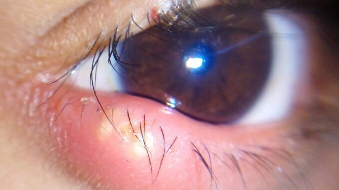

07.06.2023
Orjelet – cauze, tratamente și complicații
Despre orjelet – mai cunoscut sub denumirea de ulciorul la ochi, putem spune că este o afecțiune comună care afectează pleoapa și glandele sale sebacee sau glandele Meibomius. Aceasta este o inflamație a glandelor care se află la baza genelor sau în interiorul pleoapei. Ulciorul apare de obicei ca o umflătură roșie și dureroasă la marginea pleoapei, în apropierea genei.
Există două tipuri principale de orjelet:
- Extern: Apare atunci când o glandă sebacee de la baza unei gene se inflamează. Se formează o umflătură dureroasă la marginea exterioară a pleoapei. Ulciorul extern se poate dezvolta într-o colecție de puroi și poate erupe în câteva zile.
- Intern: Apare atunci când o glandă sebacee (glandă Meibomius) în interiorul pleoapei se inflamează. Se formează o umflătură roșie la marginea interioară a pleoapei, aproape de ochi. Orjeletul intern poate necesita mai mult timp pentru a se maturiza și a se vindeca.
Ulcioarele la ochi sunt de obicei cauzate de o infecție bacteriană. Factorii precum lipsa de igienă, utilizarea necorespunzătoare a lentilelor de contact, frecarea ochilor cu mâinile murdare și sistemul imunitar slăbit pot crește riscul apariției ulcioarelor.
Tratamente pentru orjelet
- Comprese sterile: Aplicarea de comprese sterile pe orjelet de câteva ori pe zi poate ajuta la ameliorarea simptomelor și la accelerarea procesului de vindecare. Utilizați un prosop curat sau o cârpă moale înmuiată în apă caldă și aplicați-o pe pleoapa afectată timp de aproximativ 10-15 minute de fiecare dată.
- Igienă adecvată: Este important să vă spălați regulat mâinile și să evitați să vă atingeți ochii sau pleoapele, contactul să fie minim. Curățați delicat zona afectată cu apă călduță și un săpun bland pentru a preveni răspândirea infecției.
- Evitați machiajul: În timpul tratamentului, evitați să purtați machiaj pe ochi, deoarece acesta poate agrava orjeletul și poate întârzia vindecarea.
- Antibiotice topice: În unele cazuri, vi se pot prescrie picături sau unguente cu antibiotice pentru a trata infecția bacteriană asociată. Este important să urmați cu strictețe instrucțiunile medicului cu privire la dozare și durata tratamentului.
- Evitați atingerea, manipularea, drenarea: Chiar dacă poate fi tentant să drenați ulciorul pentru a elimina conținutul, acest lucru poate duce la răspândirea infecției și poate agrava situația. Este mai bine să lăsați orjeletul să se vindece, aceasta se va întâmpla în câteva zile.
- Complicațiile orjeletului
Complicații
Deși în majoritatea cazurilor un orjelet este de fapt o afecțiune minoră și se vindecă de la sine în câteva săptămâni, în unele cazuri pot apărea complicații. Iată câteva dintre ele:
- Evoluția înspre Chalazion: Dacă ulciorul nu se vindecă complet și glandele sebacee rămân inflamate, se poate forma un chalazion. Aceasta este o umflătură nedureroasă care apare pe pleoapă. Poate exercita presiune asupra ochiului, cauzând uneori vedere încețoșată sau distorsionată.
- Infecție extinsă: În unele cazuri, infecția din ulcior se poate extinde și poate afecta întreaga pleoapă. Aceasta poate duce la umflături severe, roșeață extinsă, durere intensă și sensibilitate la lumină. Infecția extinsă necesită adesea tratament antibiotic pentru a preveni complicațiile grave.
- Blefarită: Orjeletul recurent sau care nu se vindecă poate fi asociat cu blefarita, o afecțiune inflamatorie a marginii pleoapelor. Blefarita poate provoca simptome precum mâncărime, senzație de arsură, înroșirea pleoapelor și formarea crustelor la marginea acestora.
- Celulită orbitară: Aceasta este o complicație rară, dar gravă, a ulciorului. Celulita orbitară este o infecție care afectează țesuturile din jurul ochiului, inclusiv pleoapele, grăsimea orbitară și mușchii. Poate provoca umflături severe, roșeață intensă, durere puternică, febră și tulburări de vedere. Celulita orbitară necesită tratament imediat și poate necesita internare în spital pentru administrarea antibioticelor intravenoase.
Recomandăm ca gestionarea tuturor inflamațiilor oculopalpebrale să fie făcută sub control medical Aceasta pentru a primi un diagnostic corect și un tratament adecvat. Vă recomandăm insistent să consultați medicul. Nu faceți tratamente improvizate și documentate din surse nemedicale.